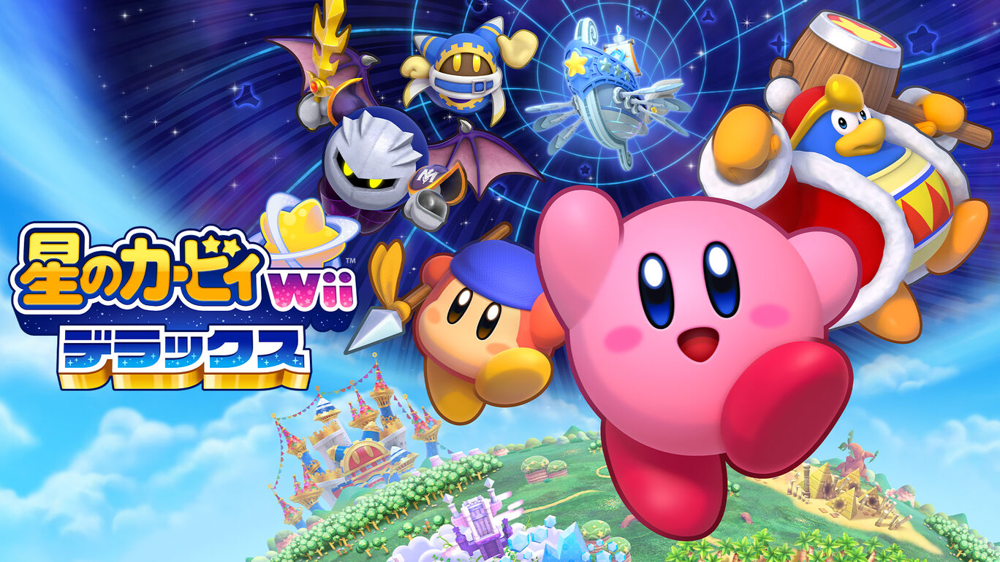
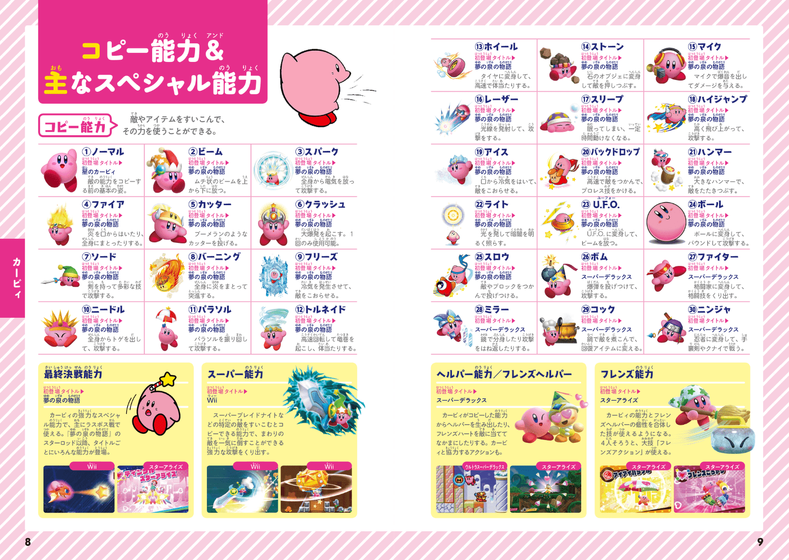
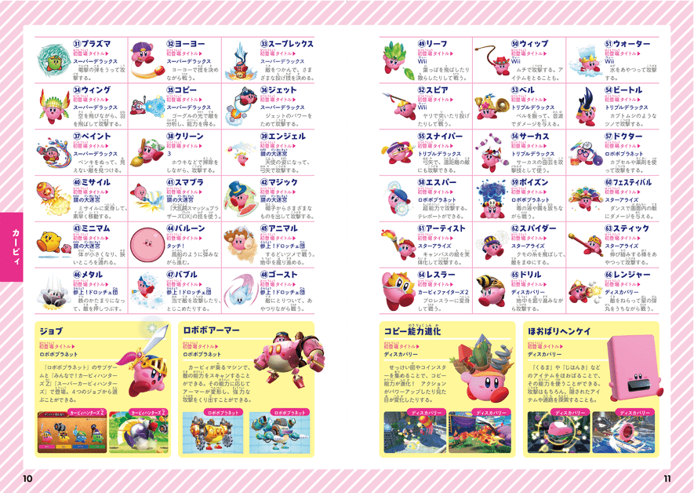
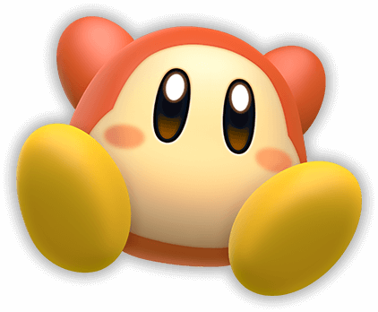
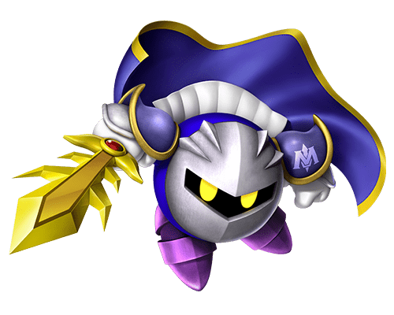
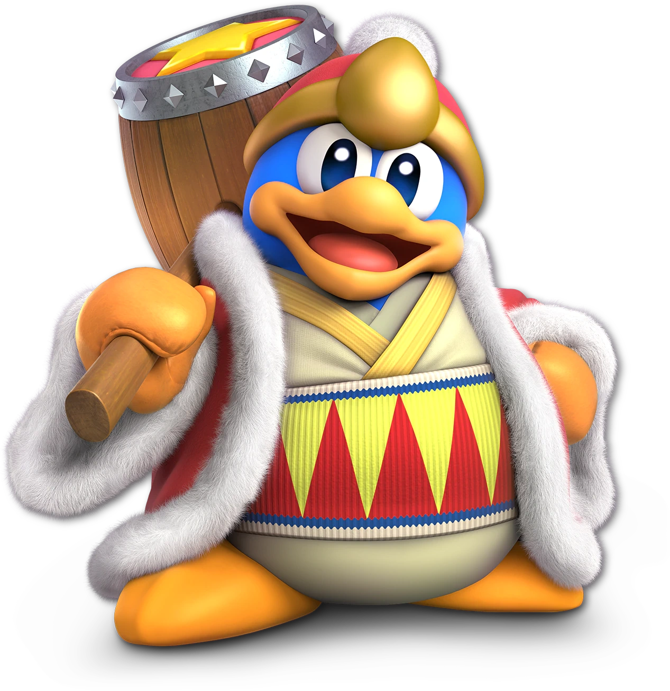

なんでも すいこむ まんまるボディの くいしんぼう！
あきれかえるほどへいわな くに 『プププランド』で くらしている
ワープスターにのって向かう その先は・・・？
惑星『ポップスター』をとびだして いざ、 ぼうけんに出発だっ！
ブキをつかったり！ やすんだり・・・
フシギなワザをつかったり！ おひるねしたり・・・
ときには すがたを変えてたたかうことも！
ちょっと マイペースなところも あるけれど・・・
ピンチなときには たよりになるゆうかんな ヒーローだ！




ひとりでぼーっとしてたり
おおぜいであつまってぼーっとしてたり
みんなで 気ままにくらしているだけなのに・・・
とつぜん すいこまれたり
さわぎにまきこまれたりしちゃうワドルディたち・・・
大きなワドルディや金ぴかのワドルディなど
いろんな仲間たちが いるよ！

仮面の棋士がクールに けんざん！⚔
あおき つばさで 空をまい
かれいな 剣さばきで 敵をうつ！
ときには 敵となり
また ときには 味方になることも！
アツい絆で むすばれた 部下のメタナイツたちと
巨大戦艦ハルバードに のりこみ いざ、戦いに地へ！

POWERFUL!! STRONG!! EXCITING!! DYNAMIC!!
たべものを ひとりじめしたり
みんなの 星をかくしたり
ときどき イジワル するけれど・・・
いざってときは・・・
チカラをかすぜ！
| 1992 | 1996 | 2000 | 2004 | 2008 | 2012 | 2016 | 2020 | 2025 |
|---|---|---|---|---|---|---|---|---|
| 星のカービィ | 星のカービィ スーパーデラックス | 星のカービィ64 | 星のカービィ 鏡の大迷宮 | 星のカービィ ウルトラスーパーデラックス | 星のカービィ 20周年スペシャルコレクション | 星のカービィ ロボボプラネット | 星のカービィファイターズ | カービィのエアライダー |